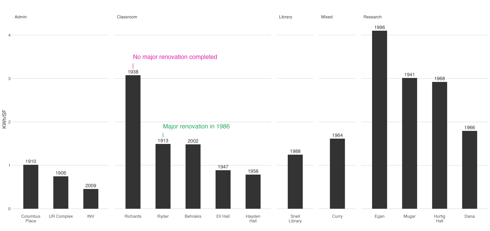

This comprehensive graph presents a detailed breakdown of electricity and natural gas consumption at Northeastern University, offering valuable insights into the university's energy usage patterns across its various buildings. By dissecting the data on a building-to-building basis, this graph sheds light on the campus's sustainability efforts, energy efficiency initiatives, and environmental impact mitigation strategies.
Electricity and natural gas consumption by buiding at NEU, 2018-2022.
The graph illustrates consumption trends over time, providing for identifying fluctuations, peak periods, and seasonal variations in electricity and natural gas usage. This analysis helps the university and its stakeholders understand the impact of weather, academic calendar, and other factors on energy consumption.
Northeastern University can make informed decisions regarding energy management, further enhance its sustainability initiatives, and inspire other educational institutions and organizations to adopt eco-friendly practices. This graph not only serves as a tool for internal assessment but also fosters awareness and a sense of responsibility toward a greener, more sustainable future.
How does consumption change over time?
Energy use by building type at Northeastern University, 2018-2022
This graph provides a perspective on Northeastern University's energy consumption by categorizing it based on different building types: classrooms, administrative buildings, research facilities, and student services centers. By dissecting the data in this manner, the graph offers a comprehensive overview of how energy resources are utilized across these distinct areas, allowing for targeted analysis and informed decision-making.
How does age and building use affect a building's energy efficiency?

UR Complex consists of the four following buildings: Meserve Hall, Lake Hall, Holmes Hall, & Nightingale Hall
Interested in how both age and the use of a building affect its energy performance, we looked at 16 buildings across Northeastern campus with varying use as defined by Northeastern’s Institutional Master Plan. A few patterns arose...
Age clearly was a factor when it came to energy efficiency with newer buildings quite consistently performing better than their older counterparts. For example, Richardson–built in 1938 and has not undergone a major renovation since– uses more than double the electricity per square foot of Ryder which was built more than 20 years before, but underwent a major renovation in 1938.
Similarly, building use is an important factor to consider when it comes to electricity efficiency. Buildings whose main use was Research used more than double the electricity per square foot than administrative buildings who as a whole, demanded the least amount of electricity.
Are Northeastern’s buildings on pace to meet new emission guidelines?
Hover over each bar to learn more about the source of these emissions Sources: Northeastern Sustainability Department, Northeastern Institutional Master Plan, EPA 2019 Emissions Factors
With buildings accounting for approximately 70% of Boston’s greenhouse gas emissions, Boston’s Building Emissions Reduction and Disclosure Ordinance (BERDO) set emissions standards for buildings larger than 20,000 square feet. The ultimate goal is to achieve net zero emissions by 2050. However, there are building requirements established by BERDO for 2030 to help buildings stay on track.
Using data from Northeastern’s Sustainability Office, we calculated the emissions of both Electricity use as well as Natural Gas for 13 buildings on campus in the years 2018 and 2022. These emissions were then calculated in terms of square footage in order to compare them to the BERDO requirements established by the city.
This data shows both good news and bad news. Out of the 13 buildings studied, three have already met the 2030 requirements in 2022. However, there is still much work to be done. Large research facilities like Egan, Mugar, and Hurtig have a considerable gap to bridge before 2030. Still, newer research facilities such as Behrakis show that there is a promising blueprint to achieve these emissions goals. Richardson–built in 1938–remains a problematic building in terms of its emissions.
How has Green Energy fluctuated by source over the years?
To gain a deeper understanding of how green energy has evolved in New England, we turn our attention to the data. In this section, we'll explore the trends in green energy usage from 2018 to 2022.
Line Plot: Yearly Usage of Green Energy Sources in New England (2018-2022)
Let's start by examining the yearly usage of different green energy sources. The line plot highlights key findings and reveals intriguing insights into New England's energy landscape.
Notable trends in the line plot include:
A consistent increase in solar energy usage.
The substantial contribution of hydro power.
A relatively stable utilization of wind energy.
The significant role played by wood in the region's green energy profile.